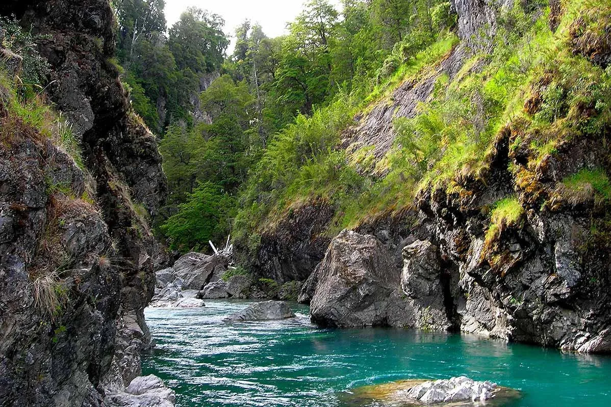
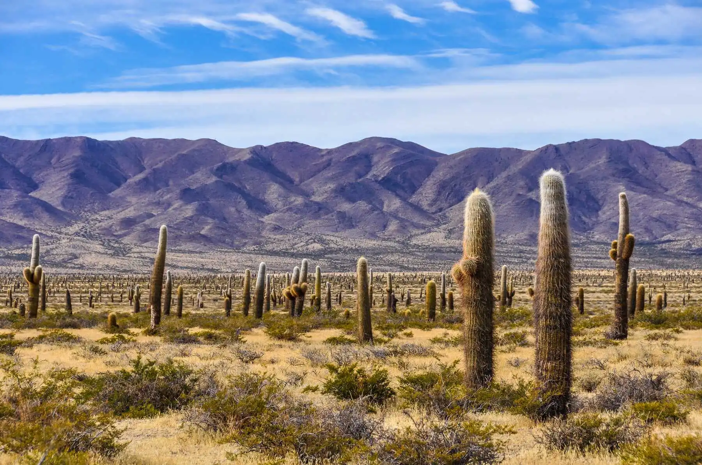
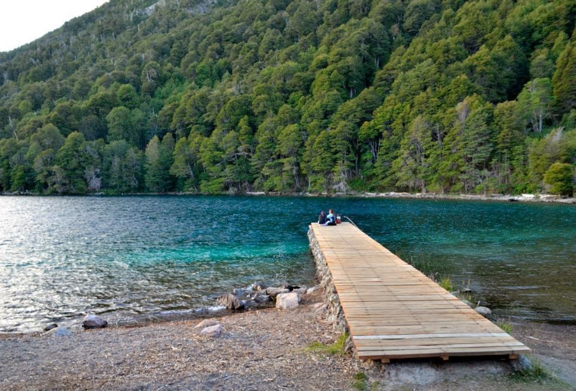
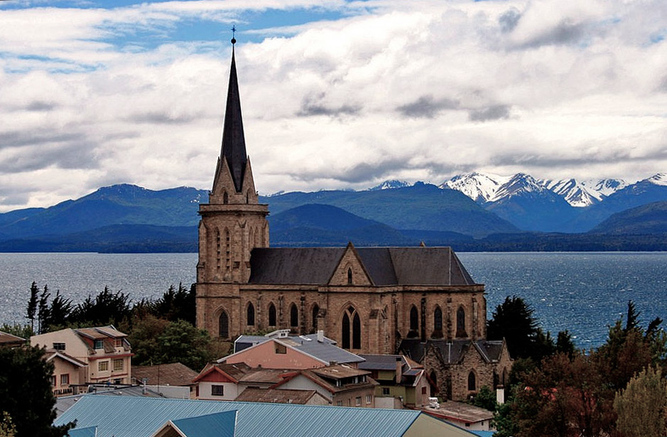
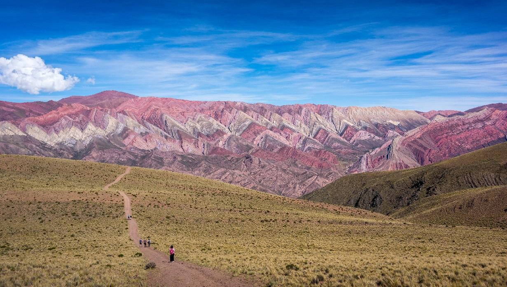

Argentina es un país sudamericano de gran envergadura con un terreno que incluye las montañas de los Andes, lagos glaciales y praderas en las Pampas, la tierra tradicional de pastoreo de su famoso ganado. El país es conocido por el baile y la música del tango. Su gran capital cosmopolita, Buenos Aires, se centra en la Plaza de Mayo, rodeada por imponentes edificios del siglo XIX, como la Casa Rosada, el icónico palacio presidencial.
El país posee también una de las siete nuevas maravillas del mundo (las Cataratas del Iguazú). Otros destinos principales son Salta, el glaciar Perito Moreno, San Carlos de Bariloche, Ushuaia, las Sierras de Córdoba, el Valle de la Luna, la Costa Atlántica y península Valdés, entre otros.
Dejate sorprender por los lugares hermosos, llenos de cultura, que tienen algunas de nuestras provincias.
Lugares Que Tienes Que Conocer

Todo el pais posee una gran cantidad de rios de los cuales se puede disfrutar con la persona que desees

uno de los mejores lugares para conocer en Buenos Aires, destacado por sus bellos edificios y estructuras modernas

el norte argentino es un lugar muy lindo para visitar gracias a su cultura, sus paisajes, es algo que no se ve en cualquier lugar del mundo

un hermoso lugar para visitar gracias a sus paisajes, su ambiente tranquilo, el agua cristalina y sus grandes montañas

un hermoso lugar situado en la bariloche,en el sur de nuestro pais, un destino que no podes dejar de lado/p>

una de las 7 maravillas del mundo, el cerro de los 7 colores, una experiencia que tenes que vivir
Ubicacion
Limita al norte con las Repúblicas de Bolivia y del Paraguay; al sur limita con la República de Chile y el Océano Atlántico; al este limita con la República Federativa del Brasil, República Oriental del Uruguay y el Océano Atlántico; y al oeste con la República de Chile.